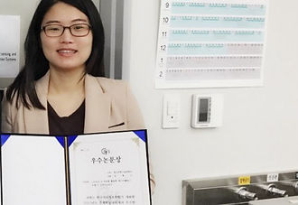
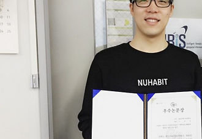
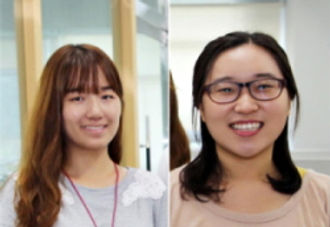
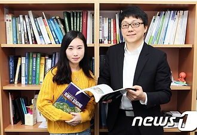
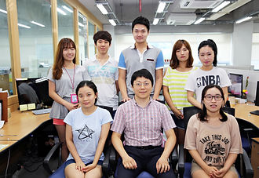

UNIST Grad. Student received an outstanding Poster Award(Yeeun Jang)
May 20, 2015
Landsat 8 자료를 활용한 에너지밸런스 모델 간 상호비교연구
한국지리정보학회/ The Korean Association of Geographic Information Studies
자세히보기



May 20, 2015

May 20, 2015

April 28, 2014

August 17, 2014

July 31, 2013